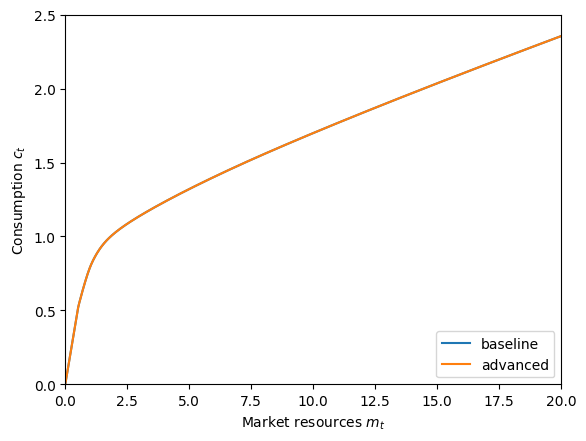
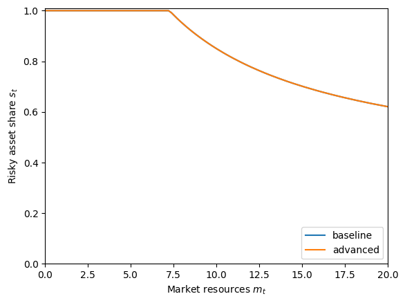

Interactive online version:
Advanced Options for Portfolio Allocation Models#
HARK’s RiskyAssetConsumerType introduced consumers who can save in a risky asset as well as the risk-free asset. The PortfolioConsumerType models the same problem, but with additional “advanced” options. Using these options significantly increases the computational complexity of solving the model, so we recommend against using PortfolioConsumerType unless you are specifically interested in these features:
Sticky portfolio choice: agents can only change their portfolio allocation with some probability.
Discrete portfolio shares: agents have a finite menu of risky asset shares \(s_t\), rather than a continuous choice.
[1]:
from time import time
import matplotlib.pyplot as plt
from HARK.models import RiskyAssetConsumerType, PortfolioConsumerType
from HARK.ConsumptionSaving.ConsPortfolioModel import init_portfolio
from HARK.utilities import plot_funcs, plot_func_slices
mystr = lambda number: f"{number:.4f}"
Standard Portfolio Choice Model: RiskyAssetConsumerType#
To begin, let’s solve the standard RiskyAssetConsumerType as a comparitor for the advanced options below. The model is described in this notebook.
[2]:
# Adjust the default parameters for PortfolioConsumerType slightly
temp_params = init_portfolio.copy()
temp_params["cycles"] = 0 # infinite horizon
del temp_params["constructors"] # don't overwrite these
[3]:
# Make and solve a baseline risky asset consumer type
print("Now solving the baseline risky asset consumer's problem...")
BaseType = RiskyAssetConsumerType(**temp_params)
t0 = time()
BaseType.solve()
BaseType.unpack("cFunc")
BaseType.unpack("ShareFunc")
t1 = time()
print("Solving the baseline risky asset problem took " + mystr(t1 - t0) + " seconds.")
Now solving the baseline risky asset consumer's problem...
Solving the baseline risky asset problem took 1.1113 seconds.
Advanced Portfolio Choice Model: PortfolioConsumerType#
The most obvious comparison to make is to solve the exact same model again, but with PortfolioConsumerType rather than RiskyAssetConsumerType. Note that for the baseline type, we used the default parameter dictionary for PortfolioConsumerType, so this is an apples-to-apples comparison. When we plot the policy functions below, they should be identical.
[4]:
# Make and solve the portfolio choice consumer type with default parameters
print("Now solving the advanced portfolio choice consumer's problem...")
PortfolioType = PortfolioConsumerType(cycles=0)
t0 = time()
PortfolioType.solve()
PortfolioType.unpack("cFuncAdj")
PortfolioType.unpack("ShareFuncAdj")
t1 = time()
print(
"Solving the advanced portfolio choice problem took " + mystr(t1 - t0) + " seconds."
)
Now solving the advanced portfolio choice consumer's problem...
Solving the advanced portfolio choice problem took 10.5826 seconds.
Note that the policy functions have slightly different names for a PortfolioConsumerType: the suffix Adj has been appended, for “adjust”. With the default parameters, the agents are free to adjust their portfolio allocation in every period, so these are the only functions that matter.
Let’s compare the policy functions between the two models to verify that they’re the same.
[5]:
# Compare consumption functions
plt.ylim(0.0, 2.5)
plot_funcs(
[BaseType.cFunc[0], PortfolioType.cFuncAdj[0]],
0.0,
20.0,
xlabel=r"Market resources $m_t$",
ylabel=r"Consumption $c_t$",
legend_kwds={"labels": ["baseline", "advanced"], "loc": 4},
)

[6]:
# Compare risky asset share functions
plt.ylim(0.0, 1.01)
plot_funcs(
[BaseType.ShareFunc[0], PortfolioType.ShareFuncAdj[0]],
0.0,
20.0,
xlabel=r"Market resources $m_t$",
ylabel=r"Risky asset share $s_t$",
legend_kwds={"labels": ["baseline", "advanced"], "loc": 4},
)

I can’t even see the baseline (blue) policy functions because they’re fully covered up by the advanced (orange) functions. Great!